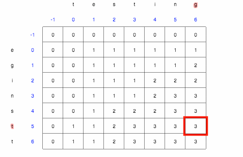
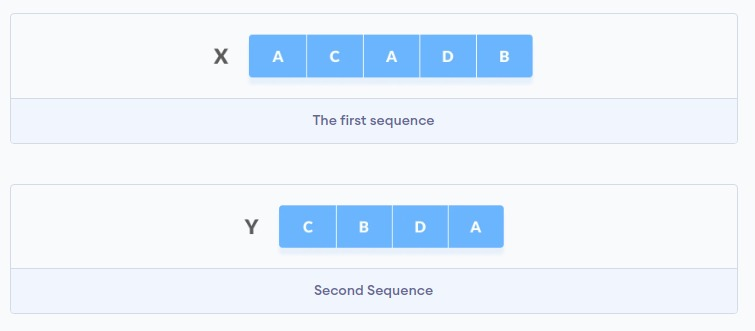
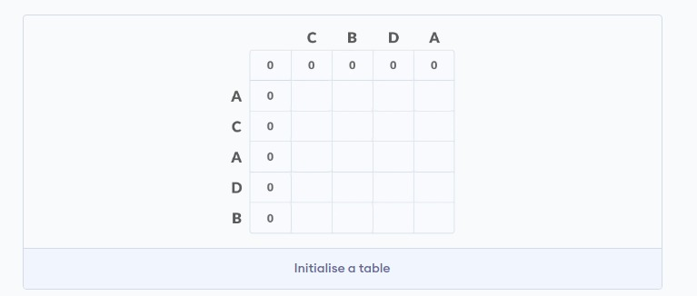
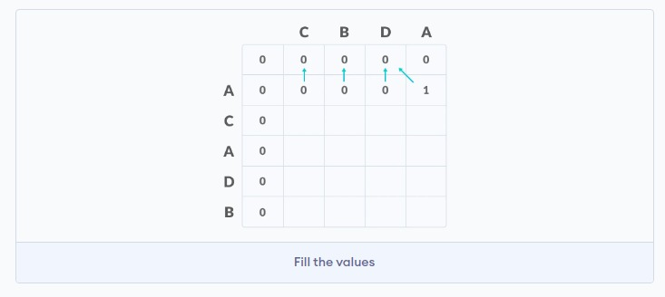
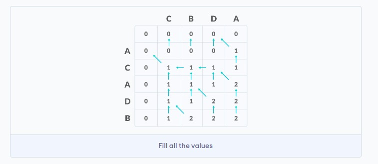
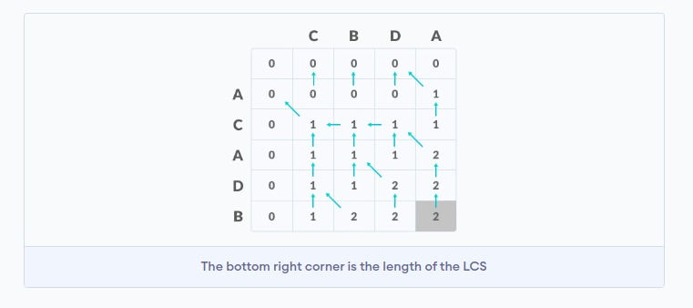
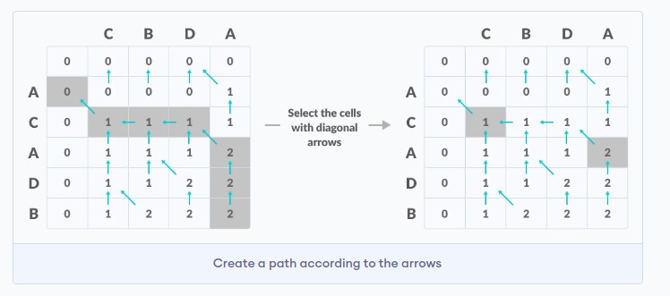

Overview
Longest Common Sub-Sequence(LCS) is defined as the longest subsequence that is common to all the given sequences, provided that the elements of the subsequence are not required to occupy consecutive positions within the original sequences.
If S1 and S2 are the two given sequences then, Z is the common subsequence of S1 and S2 if Z is a subsequence of both S1 and S2. Furthermore, Z must be a strictly increasing sequence of the indices of both S1 and S2.
In a strictly increasing sequence, the indices of the elements chosen from the original sequences must be in ascending order in Z.

If
S1 = {B, C, D, A, A, C, D}
Then, {A, D, B} cannot be a subsequence of S1 as the order of the elements is not the same (ie. not strictly increasing sequence).
If
S1 = {B, C, D, A, A, C, D}
S2 = {A, C, D, B, A, C}
Then, common subsequences are {B, C}, {C, D, A, C}, {D, A, C}, {A, A, C}, {A, C}, {C, D}, ...
Among these subsequences, {C, D, A, C} is the longest common subsequence.
Implementation
Let us take two sequences:

Create a table of dimension n+1*m+1 where n and m are the lengths of X and Y respectively. The first row and the first column are filled with zeros.

Fill each cell of the table using the following logic.
If the character correspoding to the current row and current column are matching, then fill the current cell by adding one to the diagonal element. Point an arrow to the diagonal cell.
Else take the maximum value from the previous column and previous row element for filling the current cell. Point an arrow to the cell with maximum value. If they are equal, point to any of them.

Step 2 is repeated until the table is filled.

The value in the last row and the last column is the length of the longest common subsequence.

In order to find the longest common subsequence, start from the last element and follow the direction of the arrow. The elements corresponding to () symbol form the longest common subsequence.

Thus, the longest common subsequence is CA.
Algorithm
X and Y be two given sequences
Initialize a table LCS of dimension X.length * Y.length
X.label = X
Y.label = Y
LCS[0][] = 0
LCS[][0] = 0
Start from LCS[1][1]
Compare X[i] and Y[j]
If X[i] = Y[j]
LCS[i][j] = 1 + LCS[i-1, j-1]
Point an arrow to LCS[i][j]
Else
LCS[i][j] = max(LCS[i-1][j], LCS[i][j-1])
Point an arrow to max(LCS[i-1][j], LCS[i][j-1])
Applications
- The longest common subsequence problem forms the basis of data comparison programs and use in the field of bioinformatics.
Time Complexity
- O(m*n) where m = length of 1st string and n = length of 2nd string.